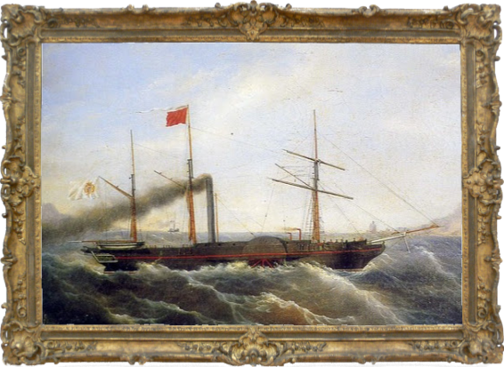

Lo straordinario sviluppo dell’industria che ebbe inizio nella seconda metà del 1700 prese il nome di rivoluzione industriale, poiché cambiò in maniera irreversibile il sistema di lavoro e la vita stessa degli esseri umani.
Ebbe inizio in Inghilterra date le numerose condizioni favorevoli:
La popolazione europea, dopo un declino alla fine del Seicento, iniziò gradualmente a crescere.
Nell’arco di 140 anni, la popolazione quasi raddoppiò. La crescita demografica fu più intensa soprattutto nella seconda metà del XVIII secolo, ma non fu omogenea.
Ad esempio, l'incremento fu notevole in Inghilterra, mentre risultò più lento nei Paesi dell'Europa centrale, orientale e mediterranea.
All’inizio del Settecento, l'Inghilterra era il Paese più ricco d'Europa grazie all'agricoltura.
Le campagne inglesi subirono trasformazioni significative: molte terre comuni diventarono proprietà private .
In questi territori i proprietari si dedicarono alla modernizzazione delle pratiche agricole.
Inizialmente si utilizzavano le regole della rotazione triennale e, nella parte periodicamente lasciata a maggese, fu introdotta la coltivazione di piante da foraggio, migliorando la produttività agricola e l'allevamento.
Poi, nel corso del Settecento, gli agricoltori inglesi adottarono la rotazione quadriennale. Simultaneamente, una selezione accurata di pecore, bovini e suini attraverso incroci portò a animali più robusti e prolifici, fornendo non solo carne e lana, ma anche un essenziale concime: il letame.
LA RIVOLUZIONE AGRICOLA PREPARA E FAVORISCE LA TRASFORMAZIONE DELL’INGHILTERRA
Nel Settecento, la maggior parte dei terreni agricoli inglesi era concentrata tra grandi o medi proprietari, prevalentemente dell'aristocrazia.
A differenza di molti nobili europei, gli aristocratici inglesi si dimostrarono imprenditori intraprendenti, investendo i accumulati dalle loro aziende agricole modernizzate in varie attività produttive.
Finanziarono la costruzione di strade e canali navigabili, promossero la creazione di manifatture che poi si trasformarono in industrie.
Queste attività collaterali producevano ulteriore ricchezza, contribuendo a un ciclo di reinvestimento.
LA RICCHEZZA DELL'INGHILTERRA È LEGATA ANCHE AI COMMERCI
Nel Settecento, l'Inghilterra aveva assicurato il dominio marittimo vincendo la concorrenza di potenze europee come l'Olanda e la Francia.
Nel 1713, ottenne il monopolio sulla tratta degli schiavi con le colonie spagnole. La flotta inglese, la più numerosa e potente, garantiva approvvigionamenti rapidi di materie prime dalle colonie e la vendita di prodotti necessari alle colonie, ma legalmente realizzabili solo nella madrepatria.
La crescente domanda interna di stava aumentando anche in Inghilterra a pari passo con la crescita demografica.
Durante il Medioevo, la trasformazione delle materie prime in prodotti finiti, come la lana in tessuti, avveniva attraverso il lavoro degli artigiani nelle loro botteghe, utilizzando macchine semplici come telai di loro proprietà.
Dal tardo Cinquecento, in Inghilterra, emerse la pratica del , in cui le famiglie contadine lavoravano a casa propria per conto di mercanti.
Questi fornivano le materie prime e talvolta gli strumenti, e tornavano a ritirare il lavoro finito entro un certo periodo di tempo.
Nel Settecento, né gli artigiani tessili nelle botteghe né i tessitori a domicilio potevano soddisfare la crescente domanda di beni di consumo.
Era necessario aumentare la produttività per far fronte alle esigenze in crescita, sostituendo i vecchi metodi con nuovi approcci capaci di produrre più rapidamente senza aumentare i costi.
L’INDUSTRIA TESSILE SI INNOVA CON EFFICACI INVENZIONI
Fu proprio questa necessità a stimolare il succedersi di invenzioni nel settore tessile, principalmente grazie a inventori artigiani.
Una delle prime innovazioni fu la navetta volante, brevettata nel 1733 da John Kay, che meccanizzò lo spostamento del filo sui telai, aumentandone l'efficienza.
I telai diventarono così veloci che richiedevano il lavoro di 7-8 operai al giorno per rifornirli di filo. I filatoi furono anche migliorati, diventando più veloci ed efficienti.
In breve tempo, le operazioni di filatura e tessitura furono completamente meccanizzate, nel 1833 un solo operaio poteva sorvegliare simultaneamente 4 telai, producendo 20 volte di più rispetto a un tessitore manuale.
Macchina a vapore di James Watt
CARBONE, ACQUA E VAPORE MUOVONO LE NUOVE MACCHINE
Con l'introduzione di complessi macchinari, la forza manuale degli operai divenne insufficiente, portando alla ricerca di nuove forme di energia.
Inizialmente si utilizzò l'energia idraulica, con stabilimenti situati in campagna accanto a corsi d'acqua, ma questa soluzione aveva limitazioni legate alla disponibilità dell'acqua.
Successivamente, si sperimentò l'uso del vapore: nel 1705 Thomas Newcomen costruì una macchina a vapore che bruciava carbone per far bollire l’acqua e produrre vapore in pressione, il quale, opportunamente regolato, azionava i macchinari.
In altre parole, trasformava l'energia termica in .
Tuttavia, questa prima macchina era inefficiente e costosa.
La macchina a vapore venne perfezionata da James Watt nel 1769, rendendola più efficiente ed economica.
Presto, la macchina di Watt trovò impiego nelle miniere e nell'industria tessile, e più tardi in altri settori come la siderurgia e i trasporti.
Col passare del tempo, i macchinari divennero troppo grandi per essere ospitati nelle case dei lavoratori.
Ciò portò alla costruzione delle fabbriche, stabilimenti capaci di alloggiare grandi macchinari e numerosi operai.
Sebbene il lavoro a domicilio non scomparve completamente, gradualmente venne soppiantato da quello in fabbrica, più veloce e economico.
Le prime fabbriche sfruttavano l'energia idraulica e dovevano essere situate presso fiumi o torrenti, ma con la diffusione dell'uso del vapore si poté produrre energia in qualsiasi luogo e stagione.
Tuttavia, si preferì impiantare le fabbriche vicino ai giacimenti di carbone che erano numerosi in Inghilterra.
IL LAVORO DI FABBRICA È PIÙ EFFICIENTE…
Fino a quel momento la produzione degli oggetti di uso quotidiano avveniva nelle botteghe artigiane, dove l'artigiano era un lavoratore indipendente e realizzava ogni pezzo manualmente con materiali propri.
Ogni oggetto era unico, poiché fabbricato a mano.
Con l'avvento delle fabbriche, il processo produttivo subì una radicale trasformazione e venne introdotto il concetto di divisione del lavoro: la produzione fu divisa in operazioni semplici e ripetitive affidate a diversi lavoratori, aumentando notevolmente la produttività.
Miniere di carbone
…MA È ANCHE DURO E MALPAGATO
I lavoratori dovevano affrontare una disciplina rigida nelle fabbriche. Sorvegliati continuamente, operai e operaie svolgevano lunghi turni di lavoro con la costante minaccia di severe multe.
I erano bassi, e donne e bambini guadagnavano notevolmente meno degli uomini adulti, pur svolgendo lavori pesanti.
Nelle miniere le condizioni erano ancora più difficili: gli uomini effettuavano scavi, mentre donne e bambini trasportavano i minerali attraverso stretti cunicoli.
Gli incidenti erano comuni, causati da crolli, allagamenti o esplosioni di gas (grisou), rendendo il lavoro nelle miniere estremamente pericoloso.
LE CITTÀ CRESCONO DISORDINATAMENTE
Durante i primi tempi della rivoluzione industriale, molti lavoratori emigrarono dalle campagne alle città in cerca di impiego, generando una rapida e disordinata crescita urbana.
Accanto alle fabbriche, furono costruite rapidamente baracche o malsane case per gli operai. Le condizioni igieniche erano disastrose, con atmosferico da fumi industriali, mancanza di acqua potabile e sistemi fognari inesistenti.
Sporcizia e liquami si accumulavano lungo le strade, facilitando la diffusione di come vaiolo, tifo, scarlattina e tubercolosi.
La mortalità era elevata, con una durata media della vita di 35 anni per i borghesi e soli 15 per le classi lavoratrici. Circa la metà dei bambini nati in città moriva prima di compiere 5 anni, e quelli che sopravvivevano erano spesso malnutriti.
La necessità pratica di produrre grandi quantità di candeggianti, coloranti e sgrassanti per le fabbriche tessili durante la rivoluzione industriale ha stimolato lo sviluppo dell'industria chimica.
Metodi tradizionali, come l'esposizione al sole per sbiancare i tessuti, non erano più praticabili a causa del grande volume di produzione e della mancanza di spazi aperti convenienti.
Di conseguenza, si è fatto ricorso a composti chimici prodotti in laboratorio, consentendo una produzione su larga scala.
L'applicazione della chimica si è poi estesa ad altri settori produttivi. Tra la fine del Settecento e l'inizio dell'Ottocento, molti chimici di valore hanno compiuto scoperte significative.
Antoine-Laurent Lavoisier, un chimico francese, è considerato il padre della chimica moderna e ha contribuito con scoperte fondamentali, come la composizione dell'aria, la struttura dell'acqua, la definizione degli elementi e la conservazione della massa durante le reazioni chimiche.

Nave a vapore
IL VAPORE È APPLICATO ALLE NAVI….
Durante il progresso industriale, lo sviluppo dei trasporti fu una componente essenziale.
I primi tentativi di applicare un motore a vapore a carri e carrozze non ebbero successo, ma la navigazione a vapore ebbe risultati più promettenti.
Il primo battello a vapore, chiamato "piroscafo", fu varato in Francia nel 1783, ma fu negli Stati Uniti che la navigazione fluviale a vapore ebbe un grande sviluppo.
Nel 1807, il battello a vapore Clermont di Robert Fulton iniziò viaggi regolari tra New York e Albany. Nel 1818, la nave americana Savannah attraversò l'Oceano Atlantico in diciannove giorni.
Tuttavia, le navi a vapore continuarono a utilizzare le vele per molti anni a causa delle sfide nel trasportare i grandi carichi di carbone necessari per le traversate.
Treno a vapore
.... E AI TRENI
Lo sviluppo delle locomotive a vapore fu molto più rapido.
All'inizio, queste macchine erano così pesanti che spezzavano le rotaie di ghisa ma poi, grazie all'ingegnere inglese George Stephenson e suo figlio Robert, furono create locomotive leggere ed efficienti ed una nuova rete ferroviaria.
Nel 1825, la prima linea ferroviaria del mondo, la Stockton-Darlington, collegò le miniere di carbone all'entroterra con la costa. Quattro anni dopo, gli Stephenson costruirono la "Rocket", che raggiunse una velocità media di 36 km/h, diventando un simbolo dell'era del trasporto a vapore.
Nonostante le iniziali preoccupazioni, la rete ferroviaria si diffuse in Europa, dimostrando la sicurezza e l'efficacia del nuovo mezzo di trasporto.
SI ANNUNCIA UNA NUOVA ENERGIA: L’ELETTRICITÀ
Già si annunciava una nuova forma di energia, l’elettricità.
Nel Settecento, l'elettricità era in gran parte sconosciuta e veniva utilizzata principalmente per giochi da salotto, come far scoccare scintille da condensatori e provocare piccole scosse.
Successivamente gli esperimenti condotti da Benjamin Franklin sull'elettricità atmosferica portarono all'invenzione del parafulmine.
Alessandro Volta, uno scienziato italiano, nel 1799 inventò la pila, il primo dispositivo capace di generare corrente elettrica continua, aprendo la strada all'utilizzo dell'elettricità in ambito industriale.